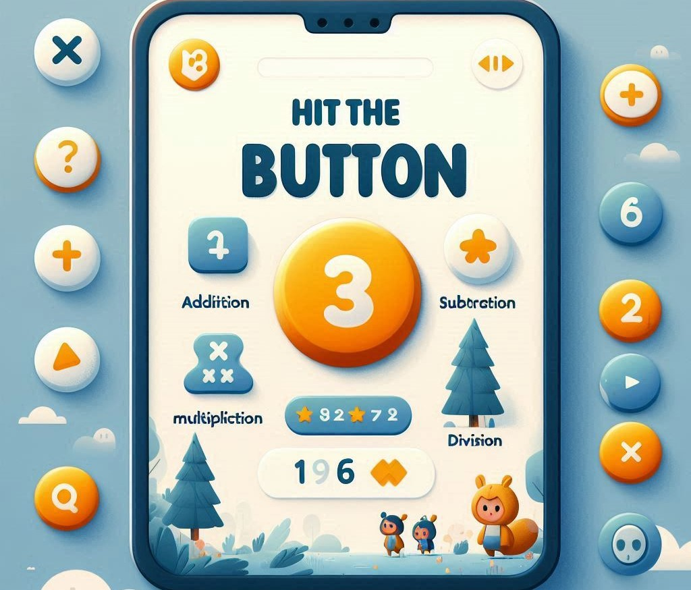

Mathematics has always had this weird reputation for either making people jump with joy or run in the opposite direction faster than Usain Bolt. If you’re in the latter camp and just cringed at the thought of improving your math skills, don’t worry. You’re not alone. But here’s the thing: improve maths skills quickly is entirely possible—and it doesn’t have to feel like torture.
Whether you're preparing for an exam, trying to keep up with your kids' homework, or just want to finally get a grip on those dreaded fractions (yes, fractions, I’m looking at you), you’ve come to the right place. Let’s break it down into manageable, stress-free steps. Oh, and don’t worry—we’ll sprinkle in a bit of humor along the way to keep things light. Ready? Let’s hit the button and start!
If you're serious about improving your math skills fast, the first thing you have to do is face the basics. I know, I know—you’re probably rolling your eyes right now thinking, "I learned that in third grade!" But trust me, getting a firm grasp on the basics is like laying down the foundation of a house. It doesn't matter how fancy you want to get with equations later; if your foundation is shaky, the whole thing’s going to collapse.
Start by revisiting essential topics such as:
Even if these seem elementary, giving yourself a refresher is going to work wonders for your confidence. And confidence, my friend, is half the battle.
Yes, I realize this tip is about as predictable as your morning coffee, but there’s a reason people say it: it works. The more you practice, the better you get. It’s like going to the gym, but instead of six-pack abs, you get a buffed-up brain that can calculate a 20% tip in seconds.
The key is consistency, not intensity. You don’t need to spend hours a day practicing math. Try setting aside 15 to 30 minutes daily to work through problems. Apps like Khan Academy, Mathway, or even simple worksheets you can find online are all great tools to help you stay on track. A little bit each day will get you to that "quick improvement" you’re aiming for.
Here’s a truth bomb: most people get overwhelmed by math because they try to solve problems all at once, like trying to eat a sandwich the size of your face in one bite. Slow down! Take a deep breath. The trick to solving math problems quickly is breaking them down into smaller, bite-sized steps.
For example, if you’re staring down a complex algebra problem, don’t panic. Break it into parts. First, isolate the variables. Then, work out the simpler arithmetic. Before you know it, you’ve managed to solve it—and your brain isn’t screaming for mercy.
Who said math is only for classrooms? Spoiler alert: it's not. Using math in your everyday life can help solidify those concepts in ways that don’t feel like you’re cramming for a test. Think of math as a practical skill, not just an academic one.
We get it—nobody likes being wrong, especially when it feels like the numbers on the page are laughing at you. But here's a secret: mistakes are a critical part of learning math quickly. Making errors shows you where you’re going wrong, and that’s invaluable.
If numbers alone are making your head spin, get visual. Draw pictures, create graphs, or use visual aids to help you understand the problem. For example, if you're having trouble with fractions, draw a pizza (because pizza makes everything better, right?) and start cutting it into different parts.
There’s no shame in leaning on technology to boost your skills. In fact, there are some pretty incredible apps, websites, and tools that can help you improve your math skills in record time.
Here are a few apps you might want to check out:
You don’t have to tackle math alone. Sometimes working through problems with someone else can help you see a different perspective. Whether it's a classmate, a friend, or even a tutor, having someone to bounce ideas off can speed up the learning process. Plus, misery loves company, right?
Finally, give yourself some credit. Math can be tough, and any improvement deserves to be celebrated. Set little goals for yourself, and when you meet them, reward yourself. Positive reinforcement isn’t just for dogs—it works for people, too.
So there you have it—your quick-start guide to improving your math skills. Sure, it might take some time, but with practice, patience, and maybe a little pizza, you’ll be solving problems faster than you ever thought possible.